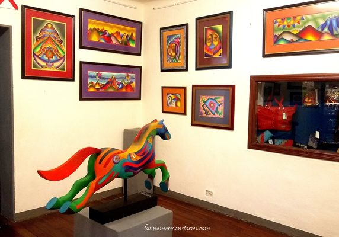
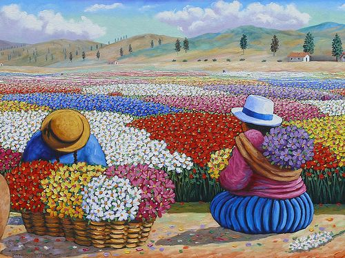
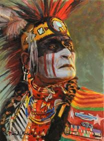

Famoso Pintor por interpretar y reflejar la cultura de nuestro pais
Una plataforma de informacion en cuanto a la historia y las pinturas
de Roberto Mamani...!!!
!!!..El arte no está hecho para reglas...!!!
ARTE LATINOAMERICANO
Las obras de Mamani Mamani representan paisajes montañosos, animales andinos como el cóndor, llamas, alpacas y otros como gallos, caballos toros y sapos por el significado simbólico que estos tienen. El pintor también se concentra en plasmar a su gente, hombres y mujeres del pueblo así también como los dioses ancestrales: el Sol y la Luna. A pesar del fuerte carácter indígena de sus obras el pintor no niega la colonización como parte de la historia que ha aportado significativamente a la cultura boliviana, en su aspecto más importante, el cristianismo. Algo interesante a tener en cuenta es la inclusión de una parroquia o iglesia en los pueblos plasmados en los paisajes montañosos andinos, en casi todos los casos una iglesia se alza y hace parte de la pequeña urbe entre las montañas. Este es otro reflejo más del sincretismo donde las creencias locales (montañas, madre tierra) se fusionan con una religión traída desde afuera, el cristianismo.
Conoce mas
ARTE PERUANO
La pintura llega al Perú en el siglo XVI, con los conquistadores españoles. Por entonces, el oficio no se entendía como hoy. Más que pintores había talleres dirigidos por un maestro que tenía algunos discípulos u operarios, por eso, el concepto de “autoría” no era valorado como en épocas modernas y contemporáneas. Uno de los pioneros de nuestro arte pictórico fue el sacerdote italiano Bernardo Bitti, quien llegó al Perú en 1575, y trajo las técnicas y corrientes en boga durante aquella como el manierismo, y fue fundamental para la aparición de la llamada Escuela Cusqueña. Con el surgimiento de la República y la inmersión del Perú en la cultura occidental, esta manifestación plástica fue calando entre artistas y espectadores. Por ello, no es arbitrario señalar que, a lo largo de nuestra historia, hemos tenido figuras emblemáticas en los terrenos pictóricos. Esta selección nos permite tener un panorama de ese desarrollo y, a la vez, conocer nuestra historia como país.
Conoce mas
ARTE NATIVO
El arte indígena también es reconocido como arte nativo, ya que engloba todas aquellas obras de arte, esculturas y manufacturas de los que se podrían llamar aborígenes en determinadas naciones, mundialmente se le llama el arte de los pueblos, por la asociación que se tiende a tener de estos con la identidad y cultura de la región a la que pertenecen.
Cecilio Guzmán de Rojas pintor boliviano. Nació el 24 de octubre de 1900 en Potosí. En el año 1919 sus padres lo envían a la ciudad de Cochabamba donde trabaja en el taller de Avelino Nogales.
Es el pintor indigenista por antonomasia. Creo un estilo que ejerció fuerte influencia sobre los pintores de la segunda mitad del siglo, trabajo permanentemente en la búsqueda de una identidad nacional a través de la fuerza interior y los rasgos de sus personajes en un progresivo proceso de estilización.
Conoce mas
!!!..Con mi estilo Mágico Andino, siempre traté la altivez de nuestra cosmovisión boliviana...!!!
HISTORIA
Roberto Mamani, conocido como Mamani Mamani (1962), boliviano. Nacido quechua y portando sangre aymará (pueblo que habita en América desde miles de años atrás y que, obviamente, antecede en mucho a la conquista española), Mamani traslada sus orígenes, la visión aymará del mundo, a las coloridas y vitales obras que realiza. Los ritos, las creencias, los símbolos del pueblo aymará impregnan las imágenes creadas por Mamani, que da una interpretación casi mágica, y, sin duda, muy personal, de su tierra.
¿QUE ERAN TUS PRIMEROS DIBUJOS?
Mis primeros dibujos fueron paisajes. Yo tuve la suerte de que mis padres en ningún momento se opusieran a lo que me gustaba. Estudie algo de derecho y agronomía, pero solo cuatro años, y ya para entonces había ganado algunos premios. A mis 15 años yo ya estaba firmando como Mamani Mamani, recuperando los apellidos de mis abuelos y ya tenía claro mi misión en la vida. Era lo que estaba buscando, pero aún no me cuestionaba si iba a vivir de eso (de la pintura) y que me esperaba en el futuro.
¿EN QUE TE INSPIRAS?
Yo empecé con las montañas y hasta ahora voy trabajando por series, cada uno tiene un contenido y una visión de la cosmovisión andina, de la simbología, lo mío es bien cultural, mi inspiración y fuente inagotable es parte de nuestra cultura, mi búsqueda en el arte es lo que somos en esencia. Por eso creo yo que mi arte ha logrado la atención del mundo. Hice mi primera serie de montañas dedicado a lo que se ch’alla. Son montañas tan simples, a los que yo les puse color, alguien dijo por ahí que Mamani Mamani le puso color a los andes, eso porque mis montañas se convierten en fucsias y en turquesas, le pongo otro tinte al arte andino.

¿QUE LES QUIERES DEJAR A LAS FUTURAS GENERACIONES?
Un camino para los que vienen por detrás. Creo que ahí está mi ‘ayni’ (reciprocidad), no solo es recibir, sino también dar. El artistas es soñador, me gustaría concretar a parte de estos murales importantes, algo que he querido hacer siempre, unas pachamamas gigantes en el altiplano, que se vean desde una distancia de tres o cuatro kilómetros y que dentro de esas polleras, hayan templos andinos para alimentar la espiritualidad o los saberes de las curaciones, o de la música.
!!! Mi arquitectura no es arquitectura exotica solo representa la cultura de mis ancestros...!!!!
TRAYECTORIA ARTISTICA
Ha expuesto sus obras en galerías nacionales y del exterior de Bolivia. Sus obras se encuentran en colecciones privadas en varias partes del mundo; Argentina, Brasil, Ecuador, Colombia, Venezuela, Cuba, México, Canadá, Estados Unidos, Japón, Alemania, Dinamarca, España, Holanda, Australia, Italia, Francia e Inglaterra.
Utiliza el pastel, acrílicos y el óleo. y el no haberse formado académicamente como pintor, le permitió explorar más la cultura boliviana, utilizando colores en simples diseños ondulantes, transmitiendo una sensación de paz y armonía que surge de la estrecha interrelación de los aymaras con la tierra.
La Razón Digital / Guadalupe Tapia / La Paz
El artista boliviano Roberto Mamani Mamani pinta 14 megamurales en siete edificios de 12 pisos cada uno, que se construyen en Villa Mercedario, en la zona de Villa Adela de la ciudad de El Alto. Con este proyecto busca ingresar en el libro de récord Guiness. “Nunca se ha hecho un proyecto de estas características. Por la forma de la intervención se ha visto como opción entrar al libro de Record Guiness, pero además quedará un ícono en la ciudad de El Alto”, explicó el artista plástico.
PREMIOS Y RECONOCIMIENTOS
Su propuesta ha merecido numerosos premios y distinciones entre ellos
- 1er Premio en fotografía, Día Mundial de la Población,1990, Naciones Unidas
- 1er Premio en Dibujo, Salón Pedro Domingo Murillo, 1991, La Paz
- Finalista en la Bienal de Arte Sacro 1998, Buenos Aires, Argentina
- Invitado Especial al Pabellón de Bolivia, Expo 2000 Hannover, Alemania.
!!!...Siempre parece imposible hasta que se hace...!!!